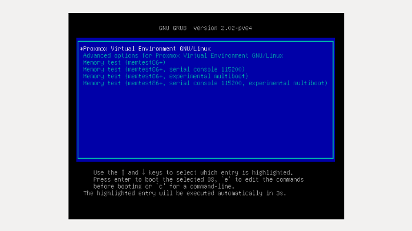

1. Descargamos la imagen ISO installer de la página oficial de Proxmox.
URL: https://www.proxmox.com/en/downloads
Ilustración 1 Sitio de descarga Oficial de Proxmox.Fuente https://www.proxmox.com/en/
Nota:Para el desarrollo de este trabajo de grado se contrató el servicio con la empresa OVH, la cual ya trae un sistema de instalación proxmox automatizado; por esta razón mostramos la instalación en un servidor local distinto al que se va a utilizar.
2. Montamos la imagen ISO en el sistema de arranque del servidor y escogemos la opción
#Install Proxmox VE
Ilustración 2 Instalación Proxmox, Inicio. Fuente: Autores
3. El siguiente paso es aceptar los términos y condiciones acerca del uso de Proxmox VE
Ilustración 3 Instalación Proxmox, Términos y condiciones. Fuente: Autores
4. Ahora nos muestra la opción para escoger el disco duro físico o lógico que hayamos creado, donde se almacenarán toda la información de proxmox y las distintas máquinas virtuales creadas.
Ilustración 4 Instalación Proxmox, escoger Disco Duro. Fuente Autores.
5. Ingresamos el País, Zona Horaria y el Lenguaje del Teclado que reconocerá Proxmox VE.
Ilustración 5 Instalación Proxmox, Zona horaria. Fuente: Autores
6. Luego ingresamos la contraseña para el acceso root de proxmox y un correo electrónico donde llegará información y notificaciones sobre proxmox y las máquinas virtuales
Ilustración 6 Instalación Proxmox, Datos de acceso. Fuente: Autores
7. La siguiente información a ingresar son los datos de configuración de la red general sobre la cual va a trabajar proxmox. Para esto tenemos los siguientes ítems:
HOSTNAME: En este campo se ingresará el dominio de tu empresa o cualquier dominio sobre el cual estará alojado proxmox VE.
IP ADDRESS: Dirección IP que tendrá el servidor.
NETMASK: Máscara de red.
GATEWAY: Puerta de enlace.
DNS SERVER: Servidores DNS.
Ilustración 7 Instalación Proxmox, Datos de acceso con DHCP. Fuente: Autores
Nota: Si la red sobre la cual está funcionando el servidor físico contiene un servidor DHCP, la información será llenada automáticamente.
8. Esperamos hasta que proxmox configure todo el servidor y damos click en NEXT
Ilustración 8 Instalación Proxmox, Configuración. Fuente: Autores
9. Como último paso damos click en “REBOOT” o “REINICIAR”
Ilustración 9 Instalación Proxmox, Reinicio de la Maquina. Fuente: Autores
10. Cuando el servidor se está reiniciando encontramos la ventana del boot, donde se debe seleccionar el sistema proxmox de arranque Proxmox Virtual Environment GNU/Linux
Ilustración 10 Instalación Proxmox, Arranque del sistema. Fuente: Autores
11. El sistema nos muestra un entorno no gráfico donde aparece el login para el ingreso a proxmox. En este caso se debe tener en cuenta tres cosas muy importantes:
A. Obtener la IP y el puerto que nos muestra esta ventana
B. Las configuraciones sobre las máquinas virtuales proxmox deben realizarse sobre el entorno gráfico para no tener algún problema con la consola de comando o falta de experiencia sobre el tema.
C. Para ingresar al panel gráfico de proxmox se necesita colocar en un navegador web la dirección IP y el puerto antecedidos de una conexión segura https://
Ilustración 11 Instalación Proxmox, Inicio. Fuente: Autores.
Nota: La información obtenida en esta imagen es sobre un servidor local de prueba. La información del servidor a utilizar en el desarrollo de esta tesis es:
IP: 91.121.89.28
PUERTO: 8006
USER: root
PASSWORD: tesis2016*/
12. Ingresamos en el navegador la IP y el puerto necesario para ingresar al panel de control de proxmox VE. URL: https://91.121.89.28:8006/
Ilustración 12 Instalación Proxmox, Ingreso al panel del navegador. Fuentes: Autores
13. En la siguiente vista encontramos el panel de control de proxmox, donde encontraremos nuestro servidor principal en el menú izquierdo.
Ilustración 13 Instalación Proxmox, Panel de Control. Fuente: Autores.
¿A donde ir? En este punto se ha instalado correctamente Proxmox, Para continuar con la creacion de una maquina virtual y asi poder montar un sistema operativo ir Creacion de Maquina Virtual